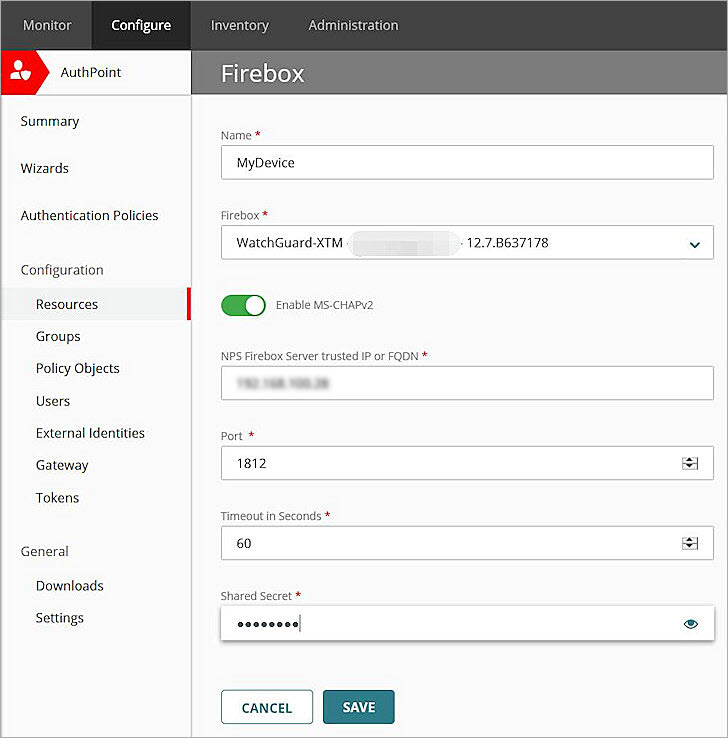
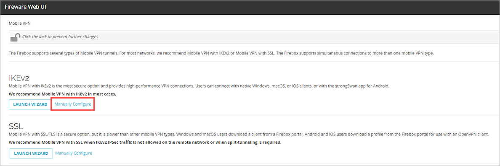

Deployment Overview
This document describes how to set up AuthPoint multi-factor authentication (MFA) for Active Directory users that use Mobile VPN with IKEv2. To configure AuthPoint MFA for Azure Active Directory users that use Mobile VPN with IKEv2, see Firebox Mobile VPN with IKEv2 Integration with AuthPoint for Azure Active Directory Users.
Your WatchGuard Firebox must already be configured and deployed before you set up MFA with AuthPoint.
If the IKEv2 VPN client is only used by local AuthPoint users, you do not have to configure Microsoft NPS or enable MS–CHAPv2. NPS is only required for users synced from Active Directory or an LDAP database.
AuthPoint supports RADIUS authentication with PAP and MS-CHAPv2. 802.1x authentication is not supported.
Integration Summary
The hardware and software used in this guide include:
- Firebox with Fireware v12.7.2 and higher
- Firebox with Fireware v12.7.1 and lower
- AuthPoint Gateway v6.1 or higher
- Windows Server 2019 with Microsoft Network Policy Server (NPS) and Active Directory Domain Services
WatchGuard Firebox Authentication Data Flow with AuthPoint
AuthPoint communicates with various cloud-based services and service providers with the RADIUS protocol. This diagram shows the data flow of an MFA transaction for a WatchGuard Firebox.
With Fireware v12.7 or higher, the AuthPoint Gateway is only required to sync LDAP users and groups to AuthPoint. The Gateway is not used for user authentication or communication with NPS.

Before You Begin
Before you begin these procedures, make sure that:
- If you have Fireware v12.7.2 or lower, we recommend that you have installed and configured v6.1 or higher of the AuthPoint Gateway (see About Gateways)
- You have installed and configured Active Directory Domain Services
- You have installed Network Policy and Access Services, which includes Network Policy Server (NPS)
Configure AuthPoint MFA for Firebox Mobile VPN with IKEv2
The steps to configure AuthPoint and your Firebox are different based on the version of Fireware that you have.
The steps to configure AuthPoint and your Firebox are different based on the version of Fireware that you have. Complete the steps in this section to configure AuthPoint MFA for Active Directory users that use Mobile VPN with IKEv2 with Fireware v12.7.2 or higher.
With Fireware v12.7.2 or higher, you can add AuthPoint as an authentication server on your Firebox. For this configuration, you must register and connect your Firebox to WatchGuard Cloud as a locally-managed Firebox or a cloud-managed Firebox. For detailed instructions to register and connect your Firebox to WatchGuard Cloud, see Add a Locally-Managed Firebox to WatchGuard Cloud and Add a Cloud-Managed Firebox to WatchGuard Cloud.
To configure AuthPoint MFA for a Firebox with Fireware v12.7.2 or higher that is not connected to WatchGuard Cloud, follow the steps in the Configure AuthPoint MFA for Firebox Mobile VPN with IKEv2 (Fireware v12.7.1 and Lower) section.
Configure Microsoft NPS Server
To enable users synced from Active Directory to successfully authenticate you must configure a Microsoft Network Policy Server (NPS) with MS-CHAPv2. An NPS is required to validate the user credentials from MS-CHAPv2 RADIUS requests against Active Directory.
In our example, Active Directory and NPS are installed on the same server. If NPS is installed on a different server than Active Directory, you must register NPS in the Active Directory domain and log in as a domain administrator.
For instructions to configure Active Directory Domain Services, see the Microsoft documentation for Active Directory.
If the IKEv2 VPN client is only used by local AuthPoint users, you do not have to configure Microsoft NPS. Continue to Configure AuthPoint section.
- On the Windows server, run Server Manager.
- Select Tools > Network Policy Server.
The Network Policy Server console appears. - Select RADIUS Clients and Servers > RADIUS Clients.
- Right-click RADIUS Clients and select New.
The New RADIUS Client window appears. - In the Friendly name text box, type a name.
- In the Address (IP or DNS) text box, type the IP address of the Firebox. In our example, the IP address of the Firebox is 192.168.100.1.
- In the Shared secret and Confirm shared secret text boxes, type a shared secret key. This key is used to communicate with Firebox or AuthPoint Gateway.
You must use the same shared secret key when you configure your Firebox in the Configure RADIUS Authentication section and your RADIUS client resource in the Add a RADIUS Client Resource in AuthPoint section.
- Click OK.
- Select Policies > Connection Request Policies. Make sure the default policy is enabled.
- Right-click Network Policies and select New.
The New Network Policy window appears. - In the Policy Name text box, type a name for this policy. In our example, we type ecotest.
- Click Next.
- In the Specify Conditions section, click Add.
- Select User Groups. Click Add > Add Groups.
- In the Enter the object name to select text box, type the group name. The name of this group must match the name of the Active Directory group your users belong to.
We recommend that you only add one Active Directory group to your network policy. If you have additional groups, create a different network policy for each group.
- Click OK.
- Click OK.
- Click Next.
- Click Next.
- In the Configure Authentication Methods section, clear the User can change password after it has expired check box.
- Click Next.
- Click Next.
- In the Configure Settings section, click Add. In our example, we use group authentication. If you want to use user authentication, skip Steps 23–29.
If you plan to use IKEv2 with AuthPoint and IKEv2 with RADIUS authentication side by side, and both methods of authentication use the same network policy on NPS, you might have to add a filter-id attribute equal to the user group name.
- From the Attributes list, select Filter-Id. Click Add.
- Click Add.
- In the Attribute Information window, in the text box type a group name. The name of this group must match the name of the Active Directory group your users belong to.
- Click OK.
- Click OK.
- Click Close.
- Click Next.
- Click Next.
- Click Finish.
- Right-click NPS (Local) and select Register server in Active Directory.
- Click OK.
- Click OK.


Configure AuthPoint
Before AuthPoint can receive authentication requests from the Firebox, you must:
- Add the Firebox as a Firebox resource in AuthPoint.
- Add an authentication policy for the Firebox resource or add the Firebox resource to an existing authentication policy.
- (Optional) Add users and groups.
Configure a Firebox Resource
From the AuthPoint management UI:
- From the navigation menu, select Resources.
- From the Choose a Resource Type drop-down list, select Firebox. Click Add Resource.

- In the Name text box, type a descriptive name for the resource.
- From the Firebox drop-down list, select the Firebox that you want to connect to AuthPoint. This list only shows Fireboxes and FireClusters that you have added to WatchGuard Cloud, and the device status in WatchGuard Cloud must be Connected. For detailed instructions to register and connect your Firebox to WatchGuard Cloud, see Add a Locally-Managed Firebox to WatchGuard Cloud.
- To configure the RADIUS client resource to accept MS-CHAPv2 authentication requests, click the Enable MS-CHAPv2 toggle.
Additional fields appear.If the IKEv2 VPN client is only used by local AuthPoint users, you do not have to enable MS–CHAPv2. Continue to Step 10.
- In the NPS RADIUS Server trusted IP or FQDN text box, type the IP address or fully qualified domain name (FQDN) of the NPS RADIUS server.
- In the Port text box, type 1812.
- In the Timeout In Seconds text box, type 60.
- In the Shared Secret text box, type the shared secret key that you specified in the Configure Microsoft NPS Server section. This is the password that the RADIUS server (AuthPoint Gateway) and the RADIUS client (Firebox) will use to communicate.


After you add the Firebox resource in AuthPoint, the AuthPoint authentication server on your Firebox is enabled. When you configure Mobile VPN with IKEv2 on the Firebox, you must add the AuthPoint authentication server to your Mobile VPN with IKEv2 configuration.

Add a Group in AuthPoint
You must have at least one user group in AuthPoint to configure MFA. If you already have a group, you do not have to add another group.
To add a WatchGuard Cloud-hosted group to the WatchGuard Cloud Directory:
- Go to Configure > Directories and Domain Services.
- Click the WatchGuard Cloud Directory domain name. If you have not yet added the WatchGuard Cloud Directory, click Add Authentication Domain and select the WatchGuard Cloud Directory.
The New Group page appears.

- In the Groups tab, click Add Group.
- In the Group Name text box, type a descriptive name for the group.
- (Optional) In the Description text box, type a description of the group.

- Click Save.
Your group is added to the WatchGuard Cloud Directory and to AuthPoint.
Add an Authentication Policy to AuthPoint
Authentication policies specify which resources users can authenticate to and which authentication methods they can use (Push, QR code, and OTP). Firebox resources for Mobile VPN with IKEv2 only support the password and push authentication methods.
You must have at least one authentication policy in AuthPoint that includes the Firebox resource. If you already have authentication policies, you do not have to create a new authentication policy. You can add this resource to your existing authentication policies.
Users that do not have an authentication policy for a specific resource cannot authenticate to log in to that resource.
To configure an authentication policy:
- From the navigation menu, select Authentication Policies.
- Click Add Policy.

- Type a name for this policy.
- From the Select the authentication options drop-down list, select Authentication options and select the Password and Push check boxes.
QR code authentication is not supported for Firebox resources. OTP authentication is not supported for IKEv2 with Firebox resources.

- Select which groups this policy applies to. You can select more than one group. To configure this policy to apply to all groups, select All Groups.
- Select the resource that you created in the Configure a Firebox Resource section. If you want this policy to apply to additional resources, select each resource this policy applies to. To configure this policy to apply to all resources, select All Resources.

-
(Optional) If you have configured policy objects such as a Network Location, select which policy objects apply to this policy. When you add a policy object to a policy, the policy only applies to user authentications that match the conditions of the policy objects. For example, if you add a Network Location to a policy, the policy only applies to user authentications that come from that Network Location. Users who only have a policy that includes a Network Location do not get access to the resource when they authenticate outside of that Network Location (because they do not have a policy that applies, not because authentication is denied).
Policies that have a Network Location apply to Firebox resources.
If you configure policy objects, we recommend that you create a second policy for the same groups and resources without the policy objects. The policy with the policy objects should have a higher priority.

- Click Save.
Your policy is created and added to the end of the policy list.When you create a new policy, we recommend that you review the order of your policies. AuthPoint always adds new policies to the end of the policy list.

Sync Users to AuthPoint from Active Directory
You must create AuthPoint user accounts for your users. To sync users from Active Directory, you must add an LDAP external identity and create one or more queries.
In AuthPoint, LDAP external identities represent external user databases. They connect to user databases to get user account information and validate passwords. The queries you add to an external identity specify which users to sync from your Active Directory or LDAP database. They pull user information and create AuthPoint user accounts for the users that are found.
For detailed instructions to sync users from Active Directory, see Sync Users from Active Directory or LDAP.
Configure the Firebox
- Select VPN > Mobile VPN.
- In the IKEv2 section, click Manually Configure.
- Select the Activate Mobile VPN with IKEv2 check box.
- In the Firebox Addresses section, click Edit.
- From the Type drop-down list, select Firebox-Generated Certificate.
- In the Domain Name or IP Address section, type the public IP address (external IP address) or domain name of the Firebox.
- Click Add.
- Click OK.
- Select the Authentication tab.
- In the Authentication Server section, from the drop-down list, select AuthPoint. Click Add.
- In the Authentication Server list, select your authentication server and click Move Up to move it to the top of the list to make it the default authentication server.
Mobile VPN with IKEv2 uses the default authentication server unless a user specifies an authentication server on the Mobile VPN with IKEv2 client.If you have a Mobile VPN with IKEv2 configured and you only want to test AuthPoint MFA, do not make your authentication server the default.
If you configure Mobile VPN with IKEv2 to use more than one authentication server, users who do not use the default authentication server must specify the authentication server or domain before the user name. For example, ad1_example.com\j_smith.
- In the Users and Groups section, from the Create new drop-down list, select the AuthPoint authentication server.
- From the adjacent drop-down list, select Group.
You can add a user or a group. In our example, we add a group.
- Click Add.
The Add User or Group window appears. - For Type, select Group.
- In the Name text box, type a name for the group. The name of this group must match the group name in AuthPoint.
If you add a user, the name of the user must match the name of the AuthPoint user or Active Directory user.
- From the Authentication Server drop-down list, select the AuthPoint authentication server.
- Click Save.
- In the Users and Groups list, select the check box for the users and groups you created.
- Click Save.
- Select VPN > Mobile VPN.
- In the IKEv2 section, select Client Profile > Download.
- Extract the .TGZ file to your VPN client Windows 10 computer and find the Windows_8.1_10 folder.
- Run the WG IKEv2.bat file.



Test the Integration
To test the integration of AuthPoint and the configuration of your Mobile VPN with IKEv2, you authenticate with a mobile token on your mobile device. For Firebox resources with MS-CHAPv2 enabled, you authenticate with a push notification (you receive a push notification in the mobile app that you must approve to authenticate).
- From a Windows 10 computer, open the Windows menu and select Settings.
- Select Network & Internet > VPN.
- Select your VPN connection and click Connect.
- Type your user name and password.
- Approve the authentication request that is sent to your mobile device.
The VPN connects successfully.

To apply firewall policies to VLAN traffic between local interfaces, select the Apply firewall policies to intra-VLAN traffic check box in Fireware. Intra-VLAN traffic is traffic from a VLAN that is destined for the same VLAN. When you enable this feature, the Firebox applies policies to traffic that passes through the firewall between hosts that are on the same VLAN. If you want to apply policies to intra-VLAN traffic, make sure that no alternate path exists between the source and destination. The VLAN traffic must go through the Firebox in order for firewall policies to apply, For more information, see Define a New VLAN.
The steps to configure AuthPoint and your Firebox are different based on the version of Fireware that you have. Complete the steps in this section to configure AuthPoint MFA for Active Directory users that use Mobile VPN with SSL with Fireware v12.7.1 and lower or if you have a Firebox with Fireware v12.7.2 or higher that is not connected to WatchGuard Cloud.
Configure Microsoft NPS Server
To enable users synced from Active Directory to successfully authenticate you must configure a Microsoft Network Policy Server (NPS) with MS-CHAPv2. An NPS is required to validate the user credentials from MS-CHAPv2 RADIUS requests against Active Directory.
In our example, Active Directory and NPS are installed on the same server. If NPS is installed on a different server than Active Directory, you must register NPS in the Active Directory domain and log in as a domain administrator.
For instructions to configure Active Directory Domain Services, see the Microsoft documentation for Active Directory.
If the IKEv2 VPN client is only used by local AuthPoint users, you do not have to configure Microsoft NPS. Continue to Configure the Firebox section.
- On the Windows server, run Server Manager.
- Select Tools > Network Policy Server.
The Network Policy Server console appears. - Select RADIUS Clients and Servers > RADIUS Clients.
- Right-click RADIUS Clients and select New.
The New RADIUS Client window appears. - In the Friendly name text box, type a name.
- In the Address (IP or DNS) text box, type the IP address of the AuthPoint Gateway. In our example, the IP address of the AuthPoint Gateway is 192.168.100.20.
- In the Shared secret and Confirm shared secret text boxes, type a shared secret key. This key is used to communicate with Firebox or AuthPoint Gateway.
You must use the same shared secret key when you configure your Firebox in the Configure RADIUS Authentication section and your RADIUS client resource in the Add a RADIUS Client Resource in AuthPoint section.
- Click OK.
- Select Policies > Connection Request Policies. Make sure the default policy is enabled.
- Right-click Network Policies and select New.
The New Network Policy window appears. - In the Policy Name text box, type a name for this policy. In our example, we type ecotest.
- Click Next.
- In the Specify Conditions section, click Add.
- Select User Groups. Click Add > Add Groups.
- In the Enter the object name to select text box, type the group name. The name of this group must match the name of the Active Directory group your users belong to.
We recommend that you only add one Active Directory group to your network policy. If you have additional groups, create a different network policy for each group.
- Click OK.
- Click OK.
- Click Next.
- Click Next.
- In the Configure Authentication Methods section, clear the User can change password after it has expired check box.
- Click Next.
- Click Next.
- In the Configure Settings section, click Add. In our example, we use group authentication. If you want to use user authentication, skip Steps 23–29.
- From the Attributes list, select Filter-Id. Click Add.
- Click Add.
- In the Attribute Information window, in the text box type a group name. The name of this group must match the name of the Active Directory group your users belong to.
- Click OK.
- Click OK.
- Click Close.
- Click Next.
- Click Finish.
- Right-click NPS (Local) and select Register server in Active Directory.
- Click OK.
- Click OK.


Configure the Firebox
You must configure the RADIUS authentication settings and enable Mobile VPN with IKEv2 on your Firebox.
Configure RADIUS Authentication
When a user authenticates with AuthPoint MFA, AuthPoint does not send a response to the Firebox until the user approves the push notification that is sent to them or until the push authentication expires.
When you configure the RADIUS authentication server, the timeout value must be greater than the combined push timeout for AuthPoint (60 seconds) and NPS (30 seconds). With the default settings on RADIUS authentication server, if a user does not approve the push notification that is sent to them within 30 seconds (3 tries, 10 seconds each), the Firebox will fail over to another server, even though the current server is not down.
- Log in to Fireware Web UI (https://<your firebox IP address>:8080).
- Select Authentication > Servers.
The Authentication Servers page appears. - From the Authentication Servers list, click RADIUS.
The RADIUS page appears. - Click Add.
The Add page appears. - In the Domain Name text box, type the domain name for this RADIUS server. Users must specify this domain name on the user login page. You cannot change the domain name after you save the settings.
- In the Primary Server Settings section, select the Enable RADIUS Server check box.
- In the IP Address text box, type the IP address of the RADIUS server (AuthPoint Gateway).
- In the Port text box, leave the default port setting of 1812. This is the default port used for communication with the RADIUS server (AuthPoint Gateway).
If you already have a RADIUS server installed that uses port 1812, or if NPS and the Gateway are installed on the same server, you must use a different port for the AuthPoint Gateway.
- In the Shared Secret and Confirm Secret text boxes, type the shared secret key that you specified in the Configure Microsoft NPS Server section. This is the password that the RADIUS server (AuthPoint Gateway) and the RADIUS client (Firebox) will use to communicate.
- In the Timeout text box, type 90.
- Leave the default value for Group Attribute.
- Click Save.


Configure Mobile VPN with IKEv2
- Select VPN > Mobile VPN.
- In the IKEv2 section, click Manually Configure.
- Select the Activate Mobile VPN with IKEv2 check box.
- In the Firebox Addresses section, click Edit.
- From the Type drop-down list, select Firebox-Generated Certificate.
- In the Domain Name or IP Address section, type the public IP address (external IP address) or domain name of the Firebox.
- Click Add.
- Click OK.
- Select the Authentication tab.
- In the Authentication Server section, from the drop-down list, select the authentication server you created. Click Add.
- In the Authentication Server list, select your authentication server and click Move Up to move it to the top of the list to make it the default authentication server.
Mobile VPN with IKEv2 uses the default authentication server unless a user specifies an authentication server on the Mobile VPN with IKEv2 client.If you have a Mobile VPN with IKEv2 configured and you only want to test AuthPoint MFA, do not make your authentication server the default.
If you configure Mobile VPN with IKEv2 to use more than one authentication server, users who do not use the default authentication server must specify the authentication server or domain before the user name. For example, ad1_example.com\j_smith.
- In the Users and Groups section, from the Create new drop-down list, select the authentication server you created.
- From the adjacent drop-down list, select Group.
You can add a user or a group. In our example, we add a group.
- Click Add.
The Add User or Group window appears. - For Type, select Group.
- In the Name text box, type a name for the group. The name of this group must match the name of the Active Directory group your users belong to. If you didn't add group attribute information in NPS, you can't add a group but have to add a user.
If you add a user, the name of the user must match the name of the AuthPoint user or Active Directory user.
- From the Authentication Server drop-down list, select your authentication server.
- Click Save.
- In the Users and Groups list, select the check box for the users and groups you created.
- Click Save.
- Select VPN > Mobile VPN.
- In the IKEv2 section, select Client Profile > Download.
- Extract the .TGZ file to your VPN client Windows 10 computer and find the Windows_8.1_10 folder.
- Run the WG IKEv2.bat file.

Configure AuthPoint
Before AuthPoint can receive authentication requests from the Firebox, you must:
- Specify the Firebox as a RADIUS client resource in AuthPoint.
- Add an authentication policy for the Firebox RADIUS client resource or add the Firebox RADIUS client resource to an existing authentication policy.
- Bind the Firebox RADIUS client resource to the AuthPoint Gateway.
Add a RADIUS Client Resource in AuthPoint
From the AuthPoint management UI:
- From the navigation menu, select Resources.
Click Add Resource.
The Add Resource page opens.

- From the Type drop-down list, select RADIUS Client.
Additional fields appear.

- In the Name text box, type a descriptive name for the resource.
- In the RADIUS client trusted IP or FQDN text box, type the IP address that your RADIUS client uses to send RADIUS packets to the AuthPoint Gateway. This must be a private IP address. For Fireboxes, this is usually the Trusted IP address of your Firebox.
- Leave the default value in the Value sent for RADIUS attribute 11 (Filter-Id) drop-down list. This setting is not supported for MS-CHAPv2 authentication requests made by Active Directory users.
- In the Shared Secret text box, type the shared secret key that you specified in the Configure Microsoft NPS Server and Configure RADIUS Authentication section. This is the password that the RADIUS server (AuthPoint Gateway) and the RADIUS client (Firebox) will use to communicate.
- To configure the RADIUS client resource to accept MS-CHAPv2 authentication requests, click the Enable MS-CHAPv2 toggle.
Additional fields appear.If the IKEv2 VPN client is only used by local AuthPoint users, you do not have to enable MS–CHAPv2. Continue to Step 11.
- In the NPS RADIUS Server trusted IP or FQDN text box, type the IP address or fully qualified domain name (FQDN) of the NPS RADIUS server.
- In the Port text box, type 1812.
If NPS and the Gateway are installed on the same server, the port that the Gateway uses to communicate with NPS must be different than the port that the Gateway uses to communicate with the RADIUS client.
- In the Timeout In Seconds text box, type 30.
- Click Save.

Add a Group in AuthPoint
You must have at least one user group in AuthPoint to configure MFA. If you already have a group, you do not have to add another group.
To add a WatchGuard Cloud-hosted group to the WatchGuard Cloud Directory:
- Go to Configure > Directories and Domain Services.
- Click the WatchGuard Cloud Directory domain name. If you have not yet added the WatchGuard Cloud Directory, click Add Authentication Domain and select the WatchGuard Cloud Directory.
The New Group page appears.
- In the Groups tab, click Add Group.
- In the Group Name text box, type a descriptive name for the group.
- (Optional) In the Description text box, type a description of the group.
- Click Save.
Your group is added to the WatchGuard Cloud Directory and to AuthPoint.
Add an Authentication Policy to AuthPoint
Authentication policies specify which resources users can authenticate to and which authentication methods they can use (Push, QR code, and OTP). RADIUS client resources for Mobile VPN with IKEv2 only support the password and push authentication methods.
You must have at least one authentication policy in AuthPoint that includes the RADIUS client resource. If you already have authentication policies, you do not have to create a new authentication policy. You can add this resource to your existing authentication policies.
Users that do not have an authentication policy for a specific resource cannot authenticate to log in to that resource.
To configure an authentication policy:
- From the navigation menu, select Authentication Policies.
- Click Add Policy.
- Type a name for this policy.
- From the Select the authentication options drop-down list, select Authentication options and select the Password and Push check boxes.
QR code authentication is not supported for RADIUS client resources. OTP authentication is not supported for RADIUS client resources with MS-CHAPv2 enabled.
- Select which groups this policy applies to. You can select more than one group. To configure this policy to apply to all groups, select All Groups.
- Select the resource that you created in the previous section. If you want this policy to apply to additional resources, select each resource this policy applies to. To configure this policy to apply to all resources, select All Resources.

-
(Optional) If you have configured policy objects such as a Network Location, select which policy objects apply to this policy. When you add a policy object to a policy, the policy only applies to user authentications that match the conditions of the policy objects. For example, if you add a Network Location to a policy, the policy only applies to user authentications that come from that Network Location. Users who only have a policy that includes a Network Location do not get access to the resource when they authenticate outside of that Network Location (because they do not have a policy that applies, not because authentication is denied).
For RADIUS authentication, policies that have a Network Location do not apply because AuthPoint does not have the IP address of the user.
If you configure policy objects, we recommend that you create a second policy for the same groups and resources without the policy objects. The policy with the policy objects should have a higher priority.
- Click Save.
Your policy is created and added to the end of the policy list.When you create a new policy, we recommend that you review the order of your policies. AuthPoint always adds new policies to the end of the policy list.
Bind the RADIUS Resource to a Gateway
To use RADIUS authentication with AuthPoint, you must have the AuthPoint Gateway installed on your corporate network and you must assign your RADIUS resources to the Gateway in the AuthPoint management UI. The Gateway functions as a RADIUS server.
If you have not already configured and installed the AuthPoint Gateway, see About Gateways.
To assign your RADIUS resources to the Gateway:
- From the navigation menu, select Gateway.
- Select the Name of the Gateway.
-
From the RADIUS section, in the Port text box, type the port number used to communicate with the Gateway. The default ports are 1812 and 1645.
If you already have a RADIUS server installed that uses port 1812 or 1645, you must use a different port for the AuthPoint Gateway.
- From the Select a RADIUS Resource drop-down list, select your RADIUS client resource.
- Click Save.
Sync Users to AuthPoint from Active Directory
You must create AuthPoint user accounts for your users. To sync users from Active Directory, you must add an LDAP external identity and create one or more queries.
In AuthPoint, LDAP external identities represent external user databases. They connect to user databases to get user account information and validate passwords. The queries you add to an external identity specify which users to sync from your Active Directory or LDAP database. They pull user information and create AuthPoint user accounts for the users that are found.
For detailed instructions to sync users from Active Directory, see Sync Users from Active Directory or LDAP.
Test the Integration
To test the integration of AuthPoint and the configuration of your Mobile VPN with IKEv2, you authenticate with a mobile token on your mobile device. For RADIUS resources with MS-CHAPv2 enabled, you authenticate with a push notification (you receive a push notification in the mobile app that you must approve to authenticate).
- From a Windows 10 computer, open the Windows menu and select Settings.
- Select Network & Internet > VPN.
- Select your VPN connection and click Connect.
- Type your user name and password.
- Approve the authentication request that is sent to your mobile device.
The VPN connects successfully.
To apply firewall policies to VLAN traffic between local interfaces, select the Apply firewall policies to intra-VLAN traffic check box in Fireware. Intra-VLAN traffic is traffic from a VLAN that is destined for the same VLAN. When you enable this feature, the Firebox applies policies to traffic that passes through the firewall between hosts that are on the same VLAN. If you want to apply policies to intra-VLAN traffic, make sure that no alternate path exists between the source and destination. The VLAN traffic must go through the Firebox in order for firewall policies to apply, For more information, see Define a New VLAN.